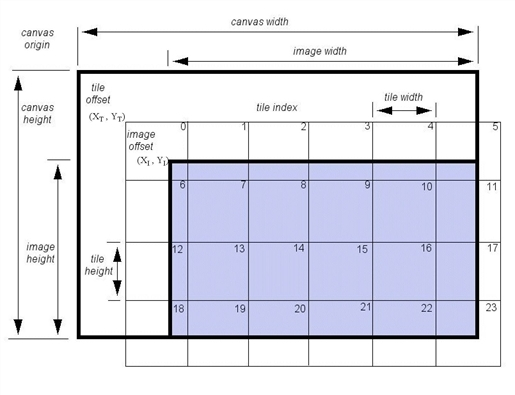

An IDLffJPEG2000 object contains the data for one or more images embedded in a JPEG2000 file as well as functionality for reading and writing JPEG2000 files. For additional information on the JPEG 2000 file format, see Overview of IDL and JPEG2000 .
None
See IDLffJPEG2000::Init .
Objects of this class have the following properties. See IDLffJPEG2000 Properties for details on individual properties.
|
|
||
|
|
||
|
|
This class has the following methods:
|
6.1 |
Introduced |
|
6.2 |
Added BIT_RATE and UUIDS properties. Added GetUUID and SETUUID methods. |
JPEG2000 is an open, international standard for image compression based on wavelet technology. It offers multiple advantages over other image file standards and compression methods. Among these advantages are:
A JPEG2000 encoded image and its most basic metadata comprise a code stream. This raw code stream may be placed in a file, usually given an extension of .j2k.
The JPEG2000 standard also allows for additional application-specific metadata to be added to a JPEG2000 file. A file that encapsulates the raw code stream and contains this additional metadata is referred to as a JP2 format file. IDL's support of the JP2 standard provides access to the following additional metadata types: color system specifications, palettes, XML containers, and display resolution information. These metadata are exposed through the COLOR_SPACE , PALETTE , XML , and DISPLAY_RESOLUTION object properties.
Note: JP2 format files must always have the file-type extension of .jp2 or .jpx (which are case insensitive).
The IDLffJPEG2000 object class in IDL provides access to the features of JPEG2000 and the JP2 file format for both input and output. This object class is detailed in the following section.
Note: Portions of IDL’s JPEG2000 functionality were developed using Unisearch’s Kakadu software. Kakadu Software. Copyright © 2001. The University of New South Wales, UNSW, Sydney NSW 2052, Australia, and Unisearch Ltd, Australia.
The following examples showcase various functionality when working with the IDLffJPEG2000 object.
This example shows how to both use the bit rate keyword to create an image with four layers and how to get and display a specific layer:
PRO JP2_BIT_RATE_EXAMPLE
; create a new JPEG2000 file
; the file will have four layers with the given bits rates
oJP2 = OBJ_NEW('IDLffJPEG2000', 'jp2_bit_rate_example.jp2',$ /WRITE, BIT_RATE=[.02,.022,.032,.1])
; set the image data [256x256]
oJP2->SetData, DIST(256)
; this will release the object
OBJ_DESTROY, oJP2
; open the file we just created
oJP2=OBJ_NEW('IDLffJPEG2000', 'jp2_bit_rate_example.jp2')
; create a window to display the four layers
WINDOW, xsize=512, ysize=512
; get and display each layer
TV, oJP2->GetData(MAX_LAYERS=1), 0
TV, oJP2->GetData(MAX_LAYERS=2), 1
TV, oJP2->GetData(MAX_LAYERS=3), 2
TV, oJP2->GetData(MAX_LAYERS=4), 3
; this will close the file
OBJ_DESTROY, oJP2
END
This example shows how to add a UUID box to a new JPEG2000 file and how to read a UUID box from an existing JPEG2000 file:
PRO JP2_UUid_EXAMPLE
; create a new jp2 file that we can write to
oJP2 = OBJ_NEW('idLFFJPEG2000', 'jp2_uuid_example.jp2', /WRITE)
; create a bogus id for the uuid box
id = BINDGEN(16)
id[*] = id[*] + 1
; create some data for the uuid box
data = BINDGEN(37)
data[*] = data[*] + 100
; add a new uuid box to the new jp2 file
oJP2->SetUUid, id, data
; set some image data
oJP2->Setdata, BYTARR(10,10, /NOZERO)
; close the file
OBJ_DESTROY, oJP2
; open the file we just created in read only mode
oJP2 = OBJ_NEW('idLffJPEG2000', 'jp2_uuid_example.jp2')
; ask the jp2 object for a list of uuids in the file
; this will return an array of 16 uuids eg..[1,16], [2,16]....
oJP2->GetProperty, UUIDS=uuid_list
HELP, uuid_list
; we get the data for the first uuid found in the file
data1 = oJP2->GetUUid(uuid_list[0,*], LEN=len)
PRINT, 'data len = ', STRTRIM(len,2), ' data = ', data1
; this will cause the object to go away
OBJ_DESTROY, oJP2
END
JPEG2000 uses the concept of the canvas to align multiple image components and tiles in a single coordinate system. This section explains the layout of image components and tiles within the canvas coordinate system.
By default, images are placed on the canvas so that the image and canvas origins align. If an image offset is specified, the origin of all image components will be located at the specified X and Y offsets from the canvas origin.
Each image component can also be subsampled. The subsampling factors for a component indicate the scaling factor between the component dimensions and the image dimensions. If an image has dimensions X I by Y I , and a component has subsampling factors X S by Y S , the dimensions of the component will be the ceiling of X I /X S by the ceiling of Y I /Y S . For example, suppose an image has an overall size of 512 by 384 samples. An image component that has subsampling factors of 2 by 2 will have dimensions 256 by 192 samples. Calling the GetData method to retrieve just this component will return a 256 by 192 array.
In the canvas coordinate system, the subsampling factors have been applied to each component so that the dimensions of all components are always equal.
Note: When reading a region within the image with the GetData method, the values passed to the REGION keyword ([ StartX , StartY , Width , Height ]) are measured in the canvas coordinate system. The StartX and StartY values are measured from the canvas origin, and the Width and Height values are measured after any subsampling has been applied to the image components. This allows a single set of Width and Height values to be used for every component.
Note:
If all components in an image have subsampling factors of 1 by 1, the dimensions of each component will be equal to the value contained in the DIMENSIONS property. To calculate the dimensions of individual components when some components have subsamplings other than 1 by 1, the following code can be used:
object->GetProperty, DIMENSIONS = dimensions, $ SUBSAMPLING = subsampling, N_COMPONENTS = n_componentscomp_sizes = ULONARR(2, n_components)FOR i = 0, n_components - 1 do $ comp_sizes[*,i] = CEIL(FLOAT(dimensions) / subsampling[*,i])
By default, images will have one tile that has the same dimensions and offset on the canvas as the image. If the tile dimensions are smaller than the image dimensions and the tile offsets are different than the images offsets, some tiles may extend beyond the borders of the image.
The values returned via the TILE_DIMENSIONS and TILE_OFFSET keywords in the GetTileProperty method are the dimensions and location of the tile on the image itself, and not necessarily the dimensions and location on the canvas. To determine the overall dimensions of a tile, whether or not it falls outside the boundaries of the image, check the TILE_DIMENSIONS property with the GetProperty method.
|
 |
IDL does not save IDLffJPEG2000 objects in a SAVE file. If you restore a SAVE file that contains object references to IDLffJPEG2000 objects, the object references are restored, but are set to null object references. The IDLffJPEG2000 objects are not saved because they contain state information for the external JPEG2000 library. This state information is not available to IDL and cannot be restored.
It is recommended that applications complete any JPEG2000 operations before saving their data in a SAVE file.